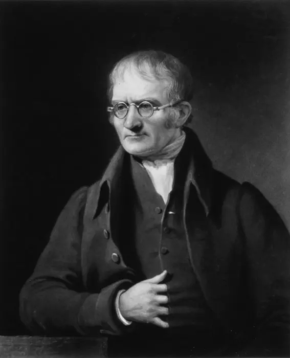
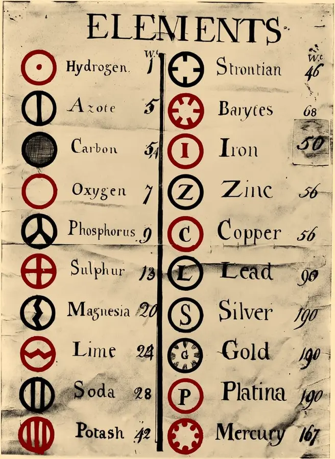

Chemistry pioneer · Models · Ratios
Dalton turns atoms into a testable idea
John Dalton connected measurements of gases and compounds to a bold model: matter is made of tiny particles, and compounds form when particles combine in simple whole-number ratios.
Predict: If one compound uses one carbon particle for every oxygen particle, what should happen when a second compound uses one carbon for every two oxygens?
1. A model built across decades
- Joseph Proust argues that a pure compound has a fixed composition, challenging the idea that mixtures can vary continuously.
- Dalton proposes that elements contain characteristic atoms and that compounds form from small whole-number combinations.
- His New System of Chemical Philosophy publishes circle symbols and relative atomic weights—an early attempt to make invisible particles countable.
- Amedeo Avogadro distinguishes atoms from molecules and explains why reacting gases show simple volume ratios.
- Thomson's electron and Rutherford's nucleus show that Dalton's solid-ball picture is incomplete, while the particulate foundation survives.
2. Read the historical evidence
These are public-domain scans and prints. Enlarge either image, then ask: what did the original maker know, what did they assume, and what later evidence changed?




3. Build the particle explanation
Carbon monoxide and carbon dioxide contain the same two elements, but their oxygen counts compare as 1:2. The small circles are a model of the ratio, not a photograph of an atom.
Choose the evidence that actually tests the model.
Worked example: compare equal amounts of carbon
Use rounded atomic masses C = 12 and O = 16. In carbon monoxide, 12 g of carbon combines with 16 g of oxygen. In carbon dioxide, the same 12 g of carbon combines with 32 g of oxygen. Because the carbon mass is held constant, the oxygen comparison is 32/16 = 2: the second compound uses twice as much oxygen.
The model explains this repeated whole-number ratio by counting one oxygen atom versus two per carbon atom. Mass measurements support the model; they do not directly photograph atoms or establish every assumption Dalton made. Isotopes later showed that atoms of one element need not all have identical masses.
Check: with 6 g carbon, how much oxygen would each compound contain?
CO uses 8 g oxygen; CO₂ uses 16 g. Both carbon and oxygen masses halve, so the oxygen comparison remains 2:1. Comparing unequal carbon masses would hide the pattern.
Source: OpenStax: early atomic theory and multiple proportions.
4. Reflection: models have limits
- Draw a compound with a 1:3 ratio.
- What observation would make you revise your drawing?
- Why is “an atom is a tiny solid ball” useful in one problem but limited in another?
Sources: Encyclopaedia Britannica: atomic theory · OpenStax: atomic theory.